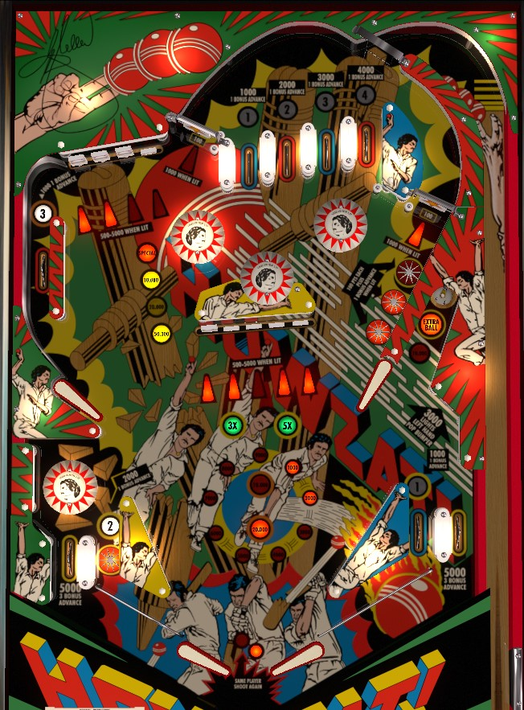

Try to plunge the #4 top lane, since it can't be earned anywhere else. Collecting 1-2-3 awards 3x bonus; collecting 1-2-3-4 awards 5x. If the center drop targets can be completed safely, do so twice to light the spinners (or three times to light the right hole for extra ball), then whale on the spinners as much as you can. If the center drop targets are not safe, try to complete the 4-bank in the upper left for an increasing award worth up to 50,000 points or a Special.
The top lanes are labelled 1, 2, 3, and 4. Lanes score 1,000, 2,000, 3,000, and 4,000 from left to right; all lanes award 1 bonus advance. There is no flipper lane change for rotating which numbers are collected. Numbers 1, 2, and 3 can be collected elsewhere on the playfield; 1 is the right in lane, 2 is the left in lane, and 3 is the upper left side lane. Roll through a numbered lane to light it. Lighting 1-2-3 awards 3x bonus for that ball. Completing 1-2-3-4 awards 5x bonus for that ball. Bonus multipliers and lit 1-2-3-4 numbers are never carried from ball to ball.
There are no one-way gates in the top lane area other than the exit to the shooter lane. A strong shot to either spinner will orbit around the top lanes area but come down the opposite spinner, instead of choking up and falling into a top lane. For this reason, it is difficult to intentionally get back to the top lanes during gameplay. Try to get the #4 lane on the plunge, then, to give yourself the best chance to earn the 5x bonus multiplier, since numbers 1-2-3 can be earned elsewhere on the playfield.
Each drop target down scores 500 points, or 5,000 plus a bonus advance when lit. 100-point switches anywhere in the game change which drop target(s) are lit; at the beginning of each ball, only 1 target is lit, but after the center bank has been completed once, 100-point switches will alternate whether targets 1-3-5 are lit or targets 2-4 are lit.
Completing the 5-bank once lights the right saucer for 10,000 points (it scores 5,000 when not lit) and lights the star rollovers in front of the right spinner. These star rollovers always award 100 points; they also award 1 bonus advance each when lit.
Completing the 5-bank a second time lights both spinners for 1,000 points per spin.
Completing the 5-bank a third time lights the right saucer for extra ball.
There are no awards for completing the 5-bank 4+ times other than the drop targets being reset. All awards earned from completing the 5-bank are reset at the end of each ball.
Each drop target down scores 500 points, or 5,000 plus a bonus advance when lit. 100-point switches anywhere in the game change which drop target(s) are lit; at the beginning of each ball, only 1 target is lit, but after the upper left bank has been completed once, 100-point switches will alternate whether the outer drop targets or the inner drop targets are lit. Completing the 4-bank of targets scores and advances the lit value in the sequence 10,000 - 20,000 - 50,000 - Special. Special can only award a free game or an extra ball and cannot be set to points. Collecting the Special resets the lit value to 10,000 points. The first time that the 4-bank is completed on a given ball, regardless of the completion value, the three upper pop bumpers will be lit for 1,000 points instead of 100 for the rest of that ball. On easy settings, the completion award carries from ball to ball, so you only need to complete the 4-bank four times over a whole game to earn the Special. On hard settings, the 4-bank completion award resets every ball, meaning you have to complete the bank 4 times in a single ball to earn the Special.
The left spinner is shot from the upper left flipper, and the right spinner is shot from the lower left flipper. Spinners score 100 points per spin, or 1,000 per spin when lit. Spinners are only lit after the center 5-bank of drop targets is completed twice, and unlight at the end of each ball.
A full shot to either spinner will orbit around the upper part of the playfield and come down the opposite side spinner. Be prepared for very fast return feeds. If you make this "upper orbit" clockwise by shooting the left spinner, try holding the right flipper up- the ball may deflect off the raised upper right flipper and knock down one or more center drop targets for you at minimal risk, similar in concept to a full plunge with a raised left flipper on Seawitch (Stern, 1980).
Scores 5,000 points when not lit. Completing the 5-bank of drop targets once lights the saucer for 10,000 points. Completing the 5-bank of drop targets 3 times in one ball lights the saucer for extra ball.
The standup target near the right saucer scores 3,000 points and lights the pop bumper above the left in/out lane; this bumper scores 100 points, or 1,000 when lit.
Dennis Lillee's Howzat! technically has a conventional in/out lane setup, but it is somewhat lopsided with short in and out lane on the left due to a Beast Lair-style pop bumper positioned directly above the in and out lanes. Both out lanes score 5,000 points and 3 bonus advances. The left in lane lights the number 2 and scores 2,000 points and a bonus advance. The right in lane lights the number 1 and scores 1,000 points and a bonus advance.
Bonus is advanced by any rollover lane, lit star rollover, or lit drop target. Out lanes award 3 bonus advances instead of 1. Bonus multiplier is advanced straight to 3x by collecting numbers 1, 2, and 3; bonus multiplier is advanced straight to 5x by completing 1-2-3-4 around the playfield. Max bonus is 5x 29,000 = 145,000 points, which is very significant. There is no mid-ball bonus collect and there is no way to carry over base bonus, bonus multiplier, or any collected 1-2-3-4 numbers.
Maximum 1 extra ball per ball in play. Tilt ends the ball in play only. There does not seem to be a way to assign a point value to extra balls or specials for competition/novelty play.